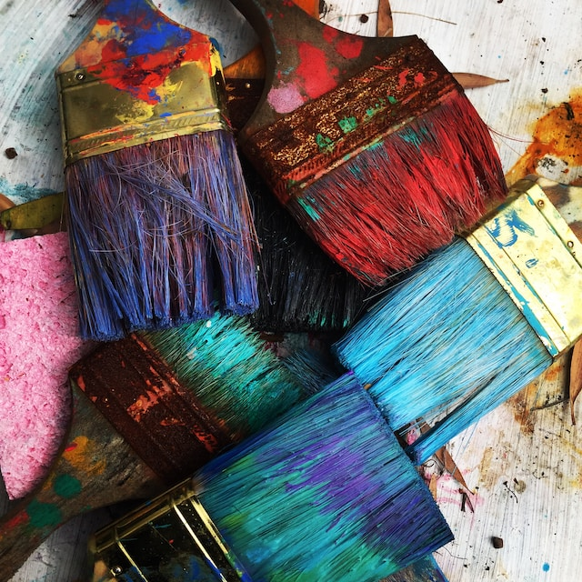

Bei uns könnt ihr euch nach Herzenslust auspowern, ob an der Wand, im Trainingsbereich oder beim Yoga. Alles, was ihr dafür braucht, könnt ihr bei uns vor Ort ausleihen oder im gut ausgestatteten Shop erwerben. Für euer leibliches Wohl ist ebenfalls gesorgt. Getränke aller Art sowie die besten Suppen des Landes und täglich frische Kuchen füllen euren Speicher wieder auf. Kommt einfach vorbei! Wir freuen uns auf euren Besuch.
Die städtische Kunstsammlung verfolgt mit ihrem wechselnden Ausstellungsprogramm eine Tradition, in der Universitätsstadt Gegenwartskunst zu präsentieren und zu diskutieren. Kontinuierlich wird das kunsthistorische Erbe Jenas mit Sonderausstellungen klassisch moderner Kunst den Besuchern zugänglich gemacht. Diese Sonderausstellungen orientieren sich an historischen Vorbildern ambitionierter Ausstellungs- und Sammlungstätigkeit der Jenaer Bürgerschaft im beginnenden 20. Jahrhundert. Neben internationaler Gegenwartskunst werden zahlreiche Ausstellungen junger Künstler gezeigt. Die Kunstsammlung der Stadt Jena gliedert sich in die Gebiete Malerei, Grafik und Plastik sowie Objektkunst und umfasst knapp 6.000 Werke. Schwerpunkt der Sammlung bildet die Kunst des 20. Jahrhunderts, von der klassischen Moderne über ein großes Konvolut von Kunst der DDR bis hin zur nationalen und internationalen Gegenwartskunst.
Die Jenaer Bäder und Freizeit GmbH betreibt mehrere Bäder in und um Jena, allen voran das Freizeitbad GalaxSea. Das moderne Sport- und Erlebnisbad mit Saunalandschaft, Wellness-Oase und gastronomischen Angeboten bietet unseren Gästen abwechslungsreiches Freizeitvergnügen. Zahlreiche Aktivitäten wie Sport- und Schwimmkurse, Saunanächte und weitere Feierlichkeiten runden das Angebot ab. Während der Sommermonate sind unsere beiden Freibäder in Jena beliebte Anlaufpunkte: Das Ostbad punktet mit seinem großen Schwimmbecken, das Südbad mit seinem naturbelassenen See. Wassersportfreunde finden in beiden Bäden attraktive Angebote, Kinder haben Raum zum Planschen. Die weitläufigen Gelände mit Liegewiesen bieten Erholung pur - bis hin zu einem FKK-Bereich im Jenaer Südbad. Freizeitvergnügen verspricht hier auch die Strandbar am Schleichersee mit idyllischen Sitzmöglichkeiten, Beach-Volleyball und Tretbootverleih.